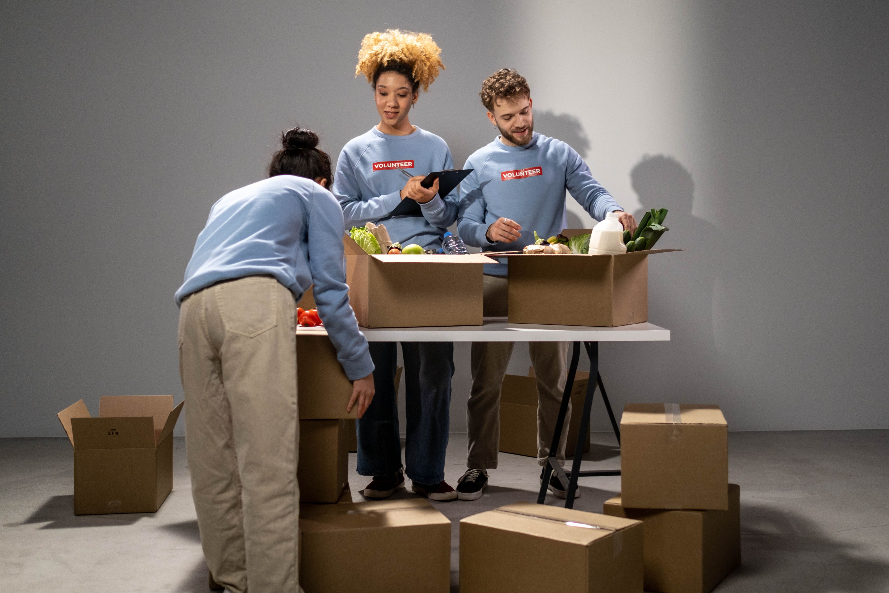
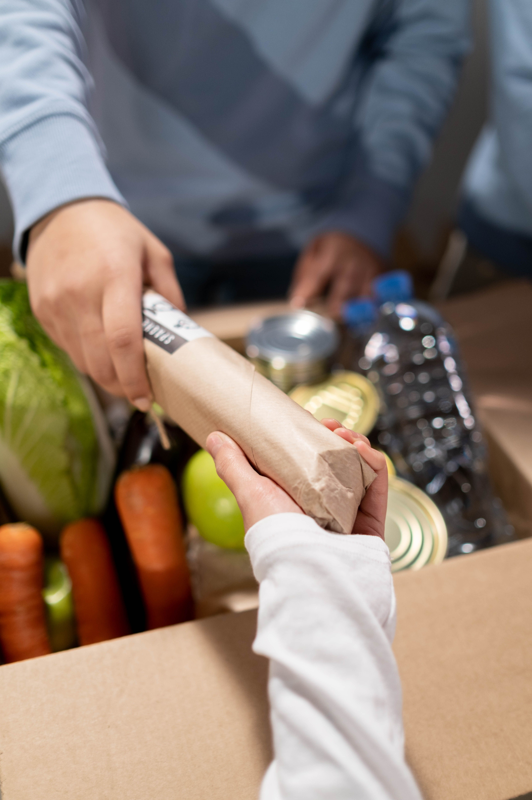

Projetos da ONG Elo Solidário
Campanhas e Projetos
Projeto ativoA ONG Elo Solidário desenvolve campanhas e projetos sociais para apoiar pessoas e comunidades que precisam de ajuda.

Doações
As doações ajudam a manter os projetos da ONG e contribuem para que mais pessoas possam ser atendidas.
As doações podem ser realizadas durante todo o ano.

Voluntariado
Os voluntários podem participar das ações da ONG, contribuindo com seu tempo e suas habilidades.
Quem quiser participar pode realizar o cadastro de voluntário pelo formulário disponível no site.
Quero ser voluntário
Obrigado por apoiar a ONG Elo Solidário!